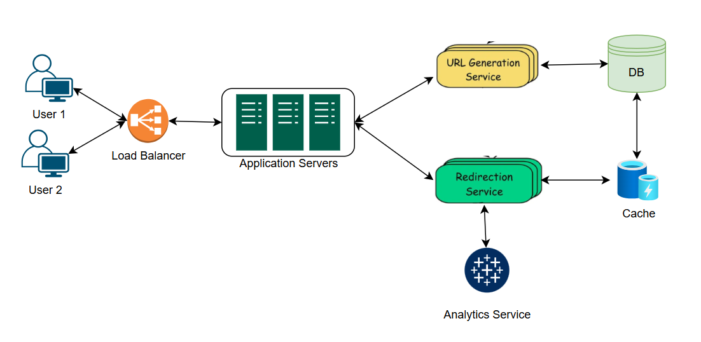

Designing a URL Shortener Service
A URL shortener service converts long URLs into shorter, unique aliases that redirect to the original URLs. This is particularly useful for sharing links on platforms with character limits or for creating cleaner, more manageable links.
Functional Requirements:
- Generate a unique short URL for a given long URL.
- Redirect users to the original URL when the short URL is accessed.
- Allow users to customize their short URLs (optional).
- Support link expiration where URLs are inaccessible after a certain period.
- Provide analytics on link usage (optional).
Non-Functional Requirements:
- High availability (99.9% uptime).
- Low latency (operations should complete in milliseconds).
- Scalability (handle millions of requests per day).
- Durability (shortened URLs should remain functional for years).
- Security to prevent malicious use, such as phishing.
2. Capacity Estimation
A. Assumptions:
- Daily URL Shortening Requests: 1 million new URLs are shortened daily.
- Read:Write Ratio: For every URL creation (write operation), there are 100 redirects (read operations). This indicates a system with significantly more read traffic than write traffic.
- Peak Traffic: Peak traffic is assumed to be 10 times the average traffic load.
- Average Original URL Length: Each original URL is approximately 100 characters long.
B. Throughput Requirements
1. Writes Per Second (WPS):
- Average WPS:
Total daily write operations = 1 million URLs.
Seconds in a day = 86,400.
Average WPS = 1,000,000 / 86,400 ≈ 12.
- Peak WPS: Peak traffic is 10x average load.
Peak WPS = 10 × 12 = 120.
2. Redirects Per Second (RPS):
- Average RPS:
Average RPS = 12 × 100 = 1,200.
- Peak RPS:
Peak RPS = 10 × 1,200 = 12,000.
C. Storage Estimation
- Storage per URL:
Short URL (7 characters, base 62) = 7 bytes.
Original URL = 100 bytes.
Metadata (timestamps, user info, etc.) = ~20 bytes.
Total per URL = 127 bytes.
- Storage per Year:
URLs per year = 1,000,000 × 365 = 365,000,000.
Total storage per year = 365,000,000 × 127 bytes = 46,355,000,000 bytes ≈ 46.4 GB.
D. Bandwidth Estimation
- Daily Read Bandwidth:
Data transferred per redirect = 100 bytes.
Daily redirects = 1,000,000 × 100 = 100,000,000.
Total daily read bandwidth = 100,000,000 × 100 bytes = 10,000,000,000 bytes ≈ 50 GB/day.
- Peak Bandwidth:
Peak RPS = 12,000.
Bandwidth per second = 12,000 × 100 bytes = 1,200,000 bytes ≈ 6 MB/s.
E. Caching Estimation
- Cache Memory for Hot URLs:
Assume 20% of daily traffic are "hot" URLs.
Hot URLs per day = 1,000,000 × 0.2 = 200,000.
Memory required per URL = 127 bytes.
Cache memory for hot URLs = 200,000 × 127 bytes = 25,400,000 bytes ≈ 25.4 MB.
- Requests Hitting the DB:
Cache hit ratio = 90%.
Requests hitting the database = 10% of total RPS.
Average DB requests per second = 1,200 × 0.1 = 120 RPS.
F. Infrastructure Sizing
- API Servers:
To handle WPS and RPS, deploy 4-6 instances behind a load balancer.
Adjust the number of instances based on peak traffic and scaling requirements.
- Database:
Use a distributed database to manage the load and ensure high availability.
Estimated size: 10-20 nodes, depending on peak traffic and data replication requirements.
- Cache Layer:
Use a distributed caching system (e.g., Redis or Memcached).
Estimated size: 3-4 nodes to handle hot URLs and peak RPS.
Summary Table
| Category |
Value |
| Daily Writes |
1 million |
| Read:Write Ratio |
100:1 |
| Peak WPS |
120 |
| Peak RPS |
12,000 |
| Storage per URL |
127 bytes |
| Yearly Storage |
46.4 GB |
| Daily Read Bandwidth |
50 GB |
| Peak Bandwidth |
6 MB/s |
| Cache Memory Needed |
25.4 MB |
| DB Requests (Peak) |
120 RPS |
| API Servers |
4-6 instances |
| Database Nodes |
10-20 |
| Cache Nodes |
3-4 |
3. High-Level Design
The system comprises several components:
- Load Balancer: Handles incoming requests for URL shortening and redirection.
- Application Servers: Process business logic for creating and retrieving URLs.
- Database: Stores mappings between short URLs and original URLs.
- Cache: Speeds up retrieval of frequently accessed URLs.
- Analytics Service: Collects data on link usage (if implemented).

4. Database Design
We Need to consider following points for database design:
- We need to store billions of records.
- Most database operations are simple key-value lookups.
- Read queries are much higher than write queries.
- We don’t need joins between tables.
- Database needs to be highly scalable and available.
A NoSQL database like DynamoDB or Cassandra is ideal because it efficiently handles billions of key-value lookups while offering high scalability and availability.
5. API Design
We will use REST API
- Endpoint: POST /api/v1/shorten
This endpoint generates a shortened URL for a provided long URL.
{
"long_url": "https://example.com/very/long/url/that/needs/shortening",
"custom_alias": "",
"expiry_date": "2024-12-31T23:59:59Z", // optional
"user_id": "user123"
}
- Sample Response:
{
"short_url": "http://short.url/abC123",
"long_url": "https://example.com/very/long/url/that/needs/shortening",
"expiry_date": "2024-12-31T23:59:59Z",
"created_at": "2024-08-10T10:30:00Z"
}
- Endpoint: GET /{short_url_key}
This endpoint redirects the user to the original long URL.jhmng
5. URL Generation Strategy
We'll consider the original long URL:
Original URL: https://www.example.com/some/very/long/url/that/needs/to/be/shortened
- Generate a Hash for the Original URL
We'll use SHA-256 to hash the original URL, which produces a 64-character hexadecimal string.
original_url = "https://www.example.com/some/very/long/url/that/needs/to/be/shortened"
hash of URL = b7e23e62ec2ac4db238b3955f8bdb9e7dbe2cfd5c430f2c56f47020e54cd93b9
- Truncate the Hash to a Shorter Length
Since the hashed value is long (64 characters), we truncate it to a shorter length (let's say 8 characters) to create a compact short URL.
shortened hash : b7e23e62
- Convert the Truncated Hash to Base 10 (Decimal)
The truncated hash (b7e23e62) is in hexadecimal (Base 16), so we need to convert it into Base 10 (decimal).
base 10 decimal value = 30642050937830457017007473131008547234
- Convert the Base 10 Number to Base 62
Now that we have the decimal (Base 10) number, we will convert it to Base 62.
Base 62 encoding uses 62 characters: A-Z, a-z, 0-9.
The encoding process involves repeatedly dividing the number by 62 and recording the remainders to build the Base 62 string.
Base62-encoded short value = BfJ3HrsV
- Store the Mapping in a Key-Value Database
Now, we store the mapping of the generated short URL (BfJ3HrsV) to the original URL in a key-value database.
Original url : https://www.example.com/some/very/long/url/that/needs/to/be/shortened
Short url : http://short.ly/BfJ3HrsV
- Redirect to the Original URL
- When a user accesses a short URL, this service is responsible for redirecting the user to the original URL.
- The Service Layer queries the database to retrieve the original URL associated with the short URL.
- Once the long URL is retrieved, the service issues an HTTP redirect response, sending the user to the original URL.
- To reduce database load and improve latency, frequently accessed short URLs can be cached in an in-memory store like Redis.
- The Redirection Service should first check the cache before querying the database.
Note: If a collision occurs, we can handle it by rehashing or appending random strings or timestamp during hasing, ensuring no two URLs map to the same short URL.
6. Handling Expiration and Deletion
For URLs with expiration:
- Store expiration dates in the database.
- Implement a background job to remove expired URLs periodically.
- Return appropriate responses for expired URLs.
7. Security Considerations
- Implement rate limiting to prevent abuse.
- Validate input URLs to prevent malicious content.
- Use HTTPS to secure data in transit.
- Monitor for phishing attempts and misuse.
8. Scalability and Fault Tolerance
- Employ load balancers to distribute traffic.
- Use distributed databases and caching systems.
- Implement replication and failover mechanisms.
- Design stateless application servers to allow horizontal scaling.
9. Conclusion
Designing a URL shortener involves careful consideration of scalability, performance, and security.
By addressing these aspects, the service can efficiently handle high traffic volumes while providing a reliable user experience.